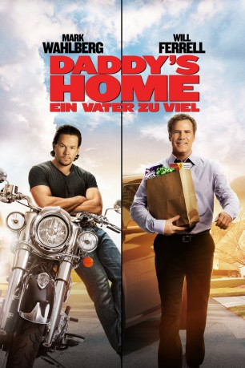
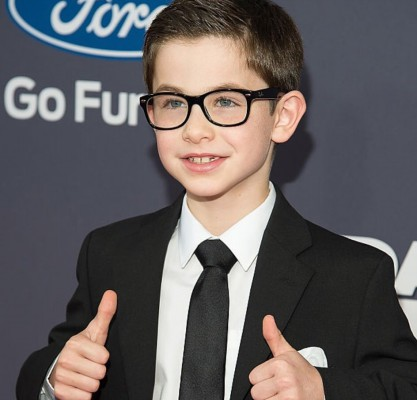
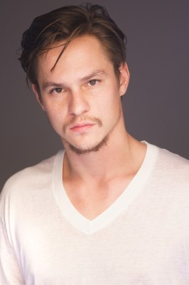

#3601 Daddy's Home - Ein Vater zuviel
Alternativ: Daddy's Home
 
 IMDB-Wertung: 6.1 / 10
IMDB-Wertung: 6.1 / 10  Metascore: 0
Metascore: 0 
Welcher Vater in Daddy’s Home nach Hause kommt, ist die große Streitfrage, denn die Kinder der geschiedenen und wiederverheirateten Sarah haben in dieser Komödie gleich zwei davon: einen leiblichen Vater, Dusty, und einen Stiefvater, Brad. Und wenn diese beiden um ihre Anerkennung und Zuneigung buhlen, ist Chaos unvermeidlich.
Jahr: 2015
Dauer: 96 Minuten
FSK: 6
Land: USA Studio: Paramount PicturesTonspuren: DD5.1 - ,
Untertitel: Deutsch, Englisch,
Auflösung: 1080p (1920x1080) Größe: 5457 MB
Genre: Komödie
Regisseur: Sean Anders
Drehbuch: Alek Keshishian
Soundtrack:
Darsteller:
 Will Ferrell als Brad Whitaker
Will Ferrell als Brad Whitaker Mark Wahlberg als Dusty Mayron
Mark Wahlberg als Dusty Mayron Linda Cardellini als Sara
Linda Cardellini als Sara Thomas Haden Church als Leo Holt
Thomas Haden Church als Leo Holt- Scarlett Estevez als Megan
-  Owen Vaccaro als Dylan
 Bobby Cannavale als Dr. Francisco
Bobby Cannavale als Dr. Francisco Hannibal Buress als Griff
Hannibal Buress als Griff Bill Burr als Jerry, Bully's Dad
Bill Burr als Jerry, Bully's Dad Jamie Denbo als Doris
Jamie Denbo als Doris-  Mark L. Young als Dental Hygienist
- Dave Davis als Panda Singer #1
- James Harlon Palmer als Panda Singer #2
- LaJessie Smith als Jean Jacket
- Olivia Renee Dupepe als 4th Grade Bully Girl
 Billy Slaughter als Instigator Dad
Billy Slaughter als Instigator Dad LaMonica Garrett als Marco, Lakers Coach
LaMonica Garrett als Marco, Lakers Coach- Nathaniel Woolsey als Beer Vendor
- Kobe Bryant als Kobe Bryant
 John Cena als Cool Dad
John Cena als Cool Dad- Alessandra Ambrosio als Karen
 Didi Costine als Dusty's Stepdaughter
Didi Costine als Dusty's Stepdaughter Paul Scheer als The Whip, Arena Radio DJ
Paul Scheer als The Whip, Arena Radio DJ- Joshua Probus als Skater Kid
 Kerry Cahill als Angry Cone-Lane Mom
Kerry Cahill als Angry Cone-Lane Mom- Chris Henchy als Panda DJ / Jason Sinclair
- Cooper Dodson als Hearts of Courage Kid
- Joel K. Berger als Corey from Red Bull
- Grayson Thorne Kilpatrick als Fist Bump Kid at Half Pipe
- JoAnna Wortham als Fertility Clinic Employee
- Abigail C Addison als Daughter at Daddy / Daughter Dance , uncredited
 Andrea Vittoria Alvarado als Panda Radio Employee , uncredited
Andrea Vittoria Alvarado als Panda Radio Employee , uncredited- Michael D. Anglin als Sheriffs , uncredited
 Sue-Lynn Ansari als Guitar Girl , uncredited
Sue-Lynn Ansari als Guitar Girl , uncredited John L. Armijo als Sheriff , uncredited
John L. Armijo als Sheriff , uncredited- Saber Bankson als Daughter at Dance , uncredited
 Charles Barber als TSA Employee , uncredited
Charles Barber als TSA Employee , uncredited Tracy Brotherton als Airline Employee , uncredited
Tracy Brotherton als Airline Employee , uncredited- Brady Calhoun als Police Officer / Father at Dance , uncredited
 Jeff Caperton als Tom - Panda Radio Executive , uncredited
Jeff Caperton als Tom - Panda Radio Executive , uncredited- David Michael Cefalu als Basketball Referee , uncredited
- Troy Compas als Jim Panda Office Employee , uncredited
- Madeline Core als Daughter at Dance , uncredited
- Stacie Davis als Female Cop , uncredited
- Tiffany Forest als Basketball Fan , uncredited
- Jaden Francis als Basketball Player Sibling , uncredited
- Nikki Fuega als Panda Radio Staff , uncredited
- Christopher Gulas als Father at Dance / Basketball Fan , uncredited
 Christopher Heskey als Sky Cab Employee #1 , uncredited
Christopher Heskey als Sky Cab Employee #1 , uncredited- Laney Kate Hulbert als Daughter at Dance , uncredited
Datei: X:\2-Dilogie(A-F)\Daddy's Home\Daddy's Home - Ein Vater zuviel (2015, FSK6, 1920x1080).mkv seit 08.05.2016
Festplatte: HD Collection-2(A-Z)-3(A-M)
 Alle Filme aus Gruppe '2-Dilogie(A-F)\Daddy's Home'
Alle Filme aus Gruppe '2-Dilogie(A-F)\Daddy's Home'